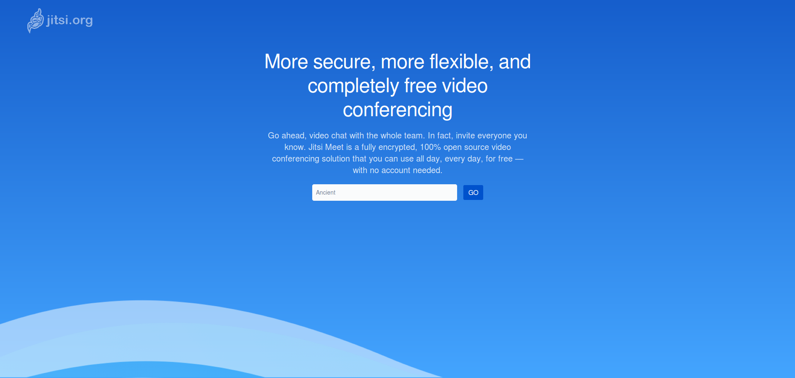
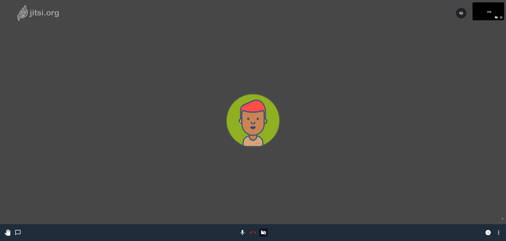
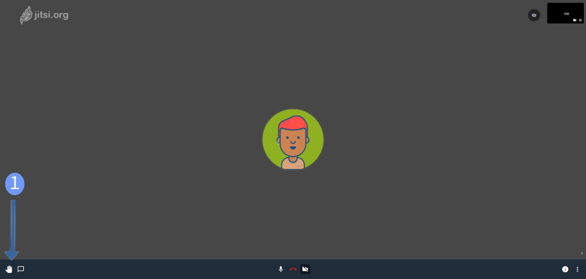
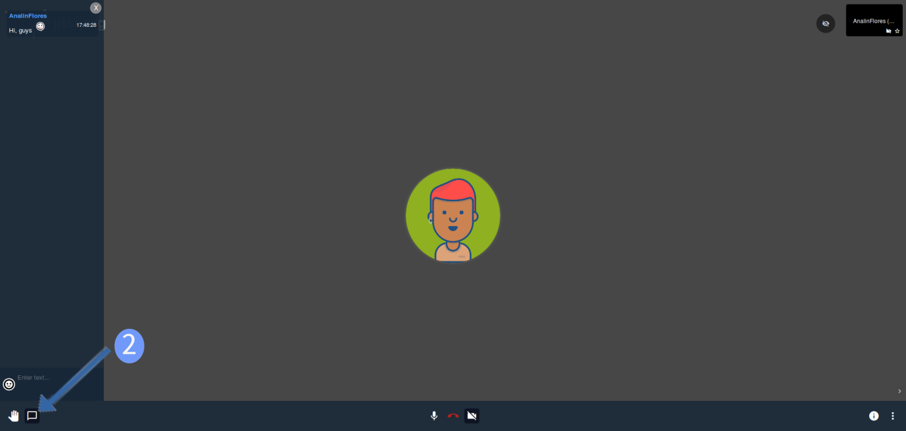
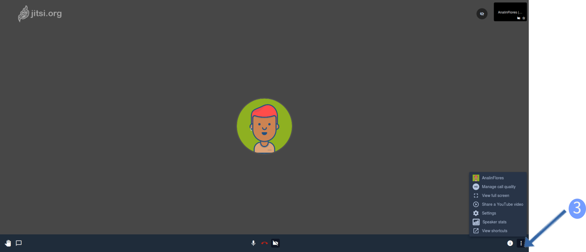
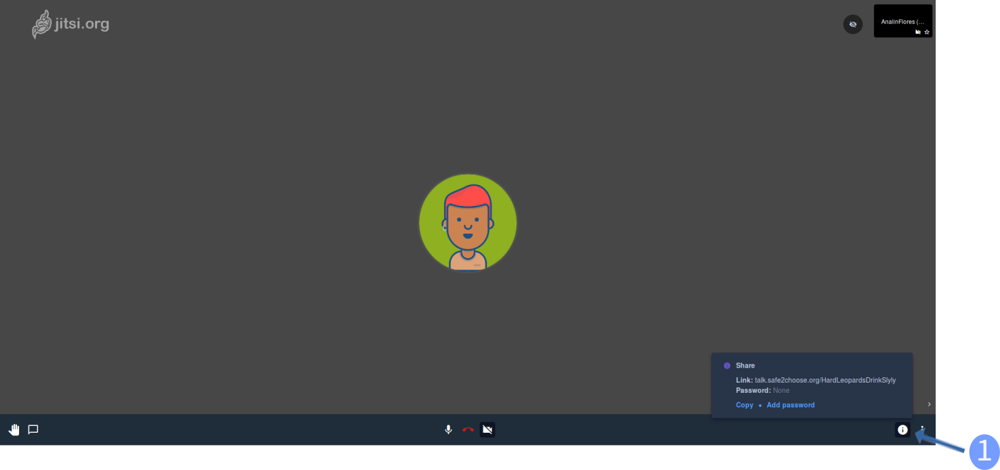

Jitsi is an audio/video Internet phone and instant Messenger. It’s our tool for safe real-time communication.
The easiest way to use Jitsi is is to go to https://talk.safe2choose.org/ or download one of the mobile apps Android or iOS
If you want to start a call, firstly you have to type this link into your browser:
After that, Jitsi is going to generate automatically a new link with random words included in the URL. That’s the link you have to share with the people you want to talk
Example: https://meet.jit.si/ShadyTreesInvestigateHigh
You’re ready to use jitsi.
Here’s the first screen you’ll see once you entered.
1.-If you click on this icon you'll be able to share your screen
2.-If you want to write instant messages, you can click on this icon and a new chat section will appear. Everbody in the call will receive them.
3.-Setting: If you click on this icon. Jitsi is going to display you a list of settings, where you can change the language of interface, select the camera, microphone and audio output, etc.
During a meeting, you can invite people to join the conference by clicking on [ Share ] link on the bottom of the page.
Once you click invite will apear an [ Link ]. This Link you can copy and send it out through email or elsewhere.